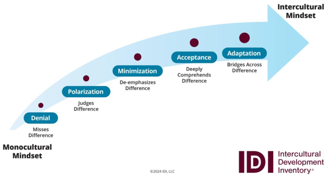

We use IDI to assess individual or organizational cultural competency. The IDI is a 50-item questionnaire available online that can be completed in 15–20 minutes.
The assessments are confidential and are used only as a baseline tool. The results are not shared with anyone other than the individual and the Qualified Administrator (QA). It is not part of any personnel file and will not be used as a performance management tool. The data is housed in a third-party database (IDI LLC) unrelated to the Willow Sage LLC.
The IDI consists of a continuum of five development models. Below is an infographic displaying the continuum.

First, request a free 30 min consultation on the IDI or a guided session for your leadership team by filling out our request form.
Individual Assessment
Our Qualified Administrator will meet with you to talk about why cultural competency is important and how it aligns with core values or key initiatives you identify for your personal growth. After that discussion, the assessment will be sent to you. The results are then shared as a pdf report with you. Our QA will schedule individual debrief with you to review your results and discuss a personalized Independent Development Plan (IDP) which serves as a guide to increase your cultural competence over the next 18-24 months.
A re-assessment will be done to evaluate progress after the 18-24 month period.
Organizational Assessment
Our Qualified Administrator will meet with you and your team to talk about why cultural competency is important and how it aligns with core values or key initiatives you identify as an organization. After that discussion, the assessment will be sent to those determined to play a key role in setting the tone for your organization’s culture.
The results are then shared in aggregate by the QA with the group, and following, the QA will schedule individual debriefs with each person who has taken the assessment to review their results and discuss a personalized Independent Development Plan (IDP) which serves as a guide to increase one’s cultural competence over the next 18-24 months.
A re-assessment will be done to evaluate progress after the 18-24 month period.
IDI Follow-Up & Coaching
After your IDI is complete, if your team is looking for more ways to engage with this work, you are encouraged to consider the Discussion Toolkits and coaching. These are designed as experiential learning opportunities with guided discussions for you and your leadership team with our staff.
We can also partner with your leadership team to consult and coach on a topic and help develop strategies for your unit. Fill out this quick form to let us know how we can help you and we will reach out for additional information as needed.
Email: contact.willowsage@gmail.com
Copyright © 2026 Willow Sage LLC